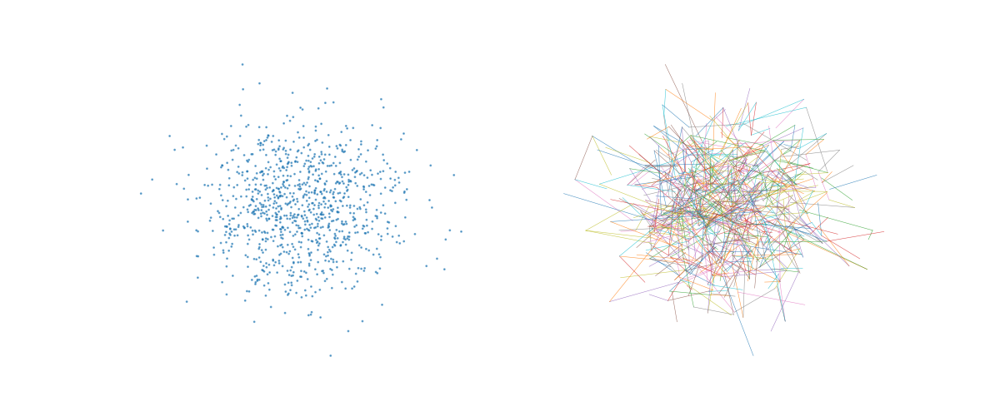

annoy.Index to NPY or CSV with examples#
An example showing the Index class.
See also
import random; random.seed(0)
# from annoy import Annoy, AnnoyIndex
from scikitplot.annoy import Annoy, AnnoyIndex, Index
print(Index.__doc__)
High-level ANNoy index composed from mixins.
Parameters
----------
f : int or None, optional, default=None
Vector dimension. If ``0`` or ``None``, dimension may be inferred from the
first vector passed to ``add_item`` (lazy mode).
If None, treated as ``0`` (reset to default).
metric : {"angular", "cosine", "euclidean", "l2", "lstsq", "manhattan", "l1", "cityblock", "taxicab", "dot", "@", ".", "dotproduct", "inner", "innerproduct", "hamming"} or None, optional, default=None
Distance metric (one of 'angular', 'euclidean', 'manhattan', 'dot', 'hamming').
If omitted and ``f > 0``, defaults to ``'angular'`` (cosine-like).
If omitted and ``f == 0``, metric may be set later before construction.
If None, behavior depends on ``f``:
* If ``f > 0``: defaults to ``'angular'`` (legacy behavior; may emit a
:class:`FutureWarning`).
* If ``f == 0``: leaves the metric unset (lazy). You may set
:attr:`metric` later before construction, or it will default to
``'angular'`` on first :meth:`add_item`.
n_neighbors : int, default=5
Non-negative integer Number of neighbors to retrieve for each query.
on_disk_path : str or None, optional, default=None
If provided, configures the path for on-disk building. When the underlying
index exists, this enables on-disk build mode (equivalent to calling
:meth:`on_disk_build` with the same filename).
Note: Annoy core truncates the target file when enabling on-disk build.
This wrapper treats ``on_disk_path`` as strictly equivalent to calling
:meth:`on_disk_build` with the same filename (truncate allowed).
In lazy mode (``f==0`` and/or ``metric is None``), activation occurs once
the underlying C++ index is created.
prefault : bool or None, optional, default=None
If True, request page-faulting index pages into memory when loading
(when supported by the underlying platform/backing).
If None, treated as ``False`` (reset to default).
seed : int or None, optional, default=None
Non-negative integer seed. If set before the index is constructed,
the seed is stored and applied when the C++ index is created.
Seed value ``0`` is treated as "use Annoy's deterministic default seed"
(a :class:`UserWarning` is emitted when ``0`` is explicitly provided).
verbose : int or None, optional, default=None
Verbosity level. Values are clamped to the range ``[-2, 2]``.
``level >= 1`` enables Annoy's verbose logging; ``level <= 0`` disables it.
Logging level inspired by gradient-boosting libraries:
* ``<= 0`` : quiet (warnings only)
* ``1`` : info (Annoy's ``verbose=True``)
* ``>= 2`` : debug (currently same as info, reserved for future use)
schema_version : int, optional, default=None
Serialization/compatibility strategy marker.
This does not change the Annoy on-disk format, but it *does* control
how the index is snapshotted in pickles.
* ``0`` or ``1``: pickle stores a ``portable-v1`` snapshot (fast restore,
ABI-checked).
* ``2``: pickle stores ``canonical-v1`` (portable across ABIs; restores by
rebuilding deterministically).
* ``>=3``: pickle stores both portable and canonical (canonical is used as
a fallback if the ABI check fails).
If None, treated as ``0`` (reset to default).
Attributes
----------
f : int, default=0
Vector dimension. ``0`` means "unknown / lazy".
metric : {'angular', 'euclidean', 'manhattan', 'dot', 'hamming'}, default="angular"
Canonical metric name, or None if not configured yet (lazy).
n_neighbors : int, default=5
Non-negative integer Number of neighbors to retrieve for each query.
on_disk_path : str or None, optional, default=None
Configured on-disk build path. Setting this attribute enables on-disk
build mode (equivalent to :meth:`on_disk_build`), with safety checks
to avoid implicit truncation of existing files.
seed, random_state : int or None, optional, default=None
Non-negative integer seed.
verbose : int or None, optional, default=None
Verbosity level.
prefault : bool, default=False
Stored prefault flag (see :meth:`load`/`:meth:`save` prefault parameters).
schema_version : int, default=0
Reserved schema/version marker (stored; does not affect on-disk format).
n_features, n_features_, n_features_in_ : int
Alias of `f` (dimension), provided for scikit-learn naming parity.
n_features_out_ : int
Number of output features produced by transform.
feature_names_in_ : list-like
Input feature names seen during fit.
Set only when explicitly provided via fit(..., feature_names=...).
y : dict | None, optional, default=None
If provided to fit(X, y), labels are stored here after a successful build.
You may also set this property manually. When possible, the setter enforces
that len(y) matches the current number of items (n_items).
pickle_mode : PickleMode
Pickle strategy used by :class:`~scikitplot.annoy._mixins._pickle.PickleMixin`.
compress_mode : CompressMode or None
Optional compression used by :class:`~scikitplot.annoy._mixins._pickle.PickleMixin`
when serializing to bytes.
Notes
-----
This class is a direct subclass of the C-extension backend. It does not
override ``__new__`` and does not rely on cooperative initialization across
mixins. Mixins must be written so that their methods work even if they
define no ``__init__`` at all.
See Also
--------
scikitplot.cexternals._annoy.Annoy
Index.from_low_level
import random
from pathlib import Path
random.seed(0)
HERE = Path.cwd().resolve()
OUT = HERE / "../../../scikitplot/annoy/tests" / "test_v2.tree"
f = 10
n = 1000
idx = Index(f, "angular")
for i in range(n):
v = [random.gauss(0, 1) for _ in range(f)]
idx.add_item(i, v)
def plot(idx, y=None, **kwargs):
import numpy as np
import matplotlib.pyplot as plt
import scikitplot.cexternals._annoy._plotting as utils
single = np.zeros(idx.get_n_items(), dtype=int)
if y is None:
double = np.random.uniform(0, 1, idx.get_n_items()).round()
# single vs double
fig, ax = plt.subplots(ncols=2, figsize=(12, 5))
alpha = kwargs.pop("alpha", 0.8)
y2 = utils.plot_annoy_index(
idx,
dims = list(range(idx.f)),
plot_kwargs={"draw_legend": False},
ax=ax[0],
)[0]
utils.plot_annoy_knn_edges(
idx,
y2,
k=1,
line_kwargs={"alpha": alpha},
ax=ax[1],
)
idx.unbuild()
idx.build(10)
plot(idx)

# idx.build(10)
idx.save(str(OUT))
print("Wrote", OUT)
idx
Wrote /home/circleci/repo/galleries/examples/annoy/../../../scikitplot/annoy/tests/test_v2.tree
import random
from scikitplot.utils._time import Timer
n, f = 1_000, 10
X = [[random.gauss(0, 1) for _ in range(f)] for _ in range(n)]
q = [[random.gauss(0, 1) for _ in range(f)]]
q
[[-0.3127546401869483, 0.9465724218669327, -0.3108358621823917, -1.112641318602492, 0.7006717421745847, -0.0728556513441296, -0.1340195780820892, -0.7864385964019445, 0.19071761022347317, 0.20808301694308412]]
# idx = Index().fit(X, feature_names=map("feature_{}".format, range(0,10)))
idx = Index().fit(X, feature_names=map("col_{}".format, range(0,10)))
idx
idx.feature_names_in_
('col_0', 'col_1', 'col_2', 'col_3', 'col_4', 'col_5', 'col_6', 'col_7', 'col_8', 'col_9')
idx.get_feature_names_out()
('neighbor_0', 'neighbor_1', 'neighbor_2', 'neighbor_3', 'neighbor_4')
idx.transform(X[:5])
[[[0.5474572777748108, -1.30021333694458, -0.24908927083015442, -0.338500440120697, -1.4725918769836426, -0.6193925142288208, 0.4619145691394806, 0.32358142733573914, 0.2247430980205536, 0.7160129547119141], [0.3795432150363922, -1.0814439058303833, -0.6971868872642517, -0.5686206817626953, -1.103886365890503, -0.7541236281394958, 0.705725371837616, 0.943377673625946, 0.6119086742401123, 1.3435934782028198], [0.21156643331050873, -0.8643466234207153, -0.5849316120147705, -0.783858597278595, -1.9358190298080444, -0.04689274728298187, 0.5601489543914795, 0.011728908866643906, 0.9475083351135254, 0.488138347864151], [0.7672842741012573, -0.9102413058280945, -1.3365751504898071, -0.3575524091720581, -1.0078351497650146, -0.27656781673431396, 0.4459843337535858, 0.25284719467163086, 0.712553083896637, 0.3709689974784851], [0.3964042365550995, -0.42005616426467896, -0.5673843622207642, -0.6945840716362, -0.9052101373672485, -0.6205509305000305, -0.058636922389268875, 0.6826471090316772, 0.9898018836975098, 0.7490196228027344]], [[0.05573755502700806, -0.4706576466560364, -0.6597297191619873, 0.16312913596630096, -0.9790469408035278, -0.8275525569915771, -2.060459852218628, -2.729288101196289, -0.8268195986747742, 0.6338273882865906], [0.649846613407135, -1.2302342653274536, 0.013532223179936409, -0.8263025283813477, -1.2967811822891235, -1.2061113119125366, -0.7416226267814636, -2.066455841064453, -1.0455116033554077, 1.7582625150680542], [1.2927970886230469, -0.8755640387535095, -0.5056493282318115, -0.09927254915237427, -0.16237357258796692, 0.2741217613220215, -1.6539034843444824, -1.5960801839828491, -0.2236139178276062, 1.1900722980499268], [0.4064362943172455, -1.0276243686676025, -0.757765531539917, 0.7894313931465149, -0.6055637001991272, -0.41537636518478394, -0.7599490880966187, -0.7554258704185486, -0.9755097031593323, 0.27309876680374146], [1.2435444593429565, -1.0532466173171997, -0.26311859488487244, -1.1512625217437744, -1.0769168138504028, -2.0363476276397705, -2.6408212184906006, -1.356844186782837, -1.0705242156982422, -1.0091755390167236]], [[1.037416696548462, 0.6505188941955566, 0.9112770557403564, 0.40074265003204346, 1.7090003490447998, -1.8210971355438232, -1.0613712072372437, -1.0616240501403809, -0.001068173092789948, -0.2159004658460617], [0.9943563938140869, 0.151925727725029, 2.238942861557007, 0.8607289791107178, 1.2040303945541382, -2.3748667240142822, 0.5421305298805237, -1.2962846755981445, -1.0256778001785278, 0.3658820688724518], [1.0757293701171875, 1.6776785850524902, -0.4844566285610199, -0.2801186442375183, 0.7964460253715515, -1.5309860706329346, -0.9653468132019043, -1.1346079111099243, -0.48670199513435364, 0.3066943287849426], [0.4567016661167145, 1.339646816253662, 0.9898688793182373, -0.25645315647125244, 1.4672883749008179, -0.6375895142555237, -0.6386777758598328, 0.18234391510486603, -0.4200282394886017, 0.0998697504401207], [0.7255332469940186, 0.22458761930465698, 0.5582488775253296, -0.4674156904220581, 0.3457297086715698, -1.1519341468811035, -2.4280519485473633, -1.0988396406173706, 0.20553182065486908, 0.07200413197278976]], [[1.2054249048233032, -1.0638865232467651, 0.9474580883979797, -0.8452785015106201, -1.4825248718261719, -0.8566842079162598, 1.247633934020996, 0.8291140198707581, -1.2124615907669067, -0.5157737135887146], [0.16599434614181519, -1.2545446157455444, 1.5510746240615845, -0.5211600661277771, -1.1034409999847412, -0.6353161334991455, 1.226678490638733, -0.0911865234375, -0.9819154143333435, 0.2407008856534958], [1.115717887878418, -0.44695305824279785, 1.3250070810317993, -0.6017792820930481, -1.2686055898666382, -2.6183433532714844, 0.22277195751667023, 0.7337615489959717, -1.1620653867721558, -0.5668874979019165], [0.8928369879722595, -1.1051188707351685, 0.9232276082038879, -0.4902592599391937, -0.8964894413948059, -0.51762455701828, 1.4229260683059692, -0.7730417251586914, -0.4338323771953583, -0.10377947986125946], [1.015687108039856, 0.18673701584339142, -0.21417959034442902, -0.668981671333313, -1.3195013999938965, -0.4612681567668915, 0.8830868005752563, 0.11312589794397354, -1.3212906122207642, -1.1506803035736084]], [[-0.4644966423511505, 0.8524463772773743, 1.1260707378387451, -0.6392664909362793, -0.06072111055254936, 0.18059048056602478, 0.13483808934688568, 0.13324356079101562, -0.12403132766485214, 1.2627049684524536], [-0.2865630090236664, 0.267973929643631, 1.3443444967269897, -1.2862900495529175, -0.4104452431201935, 0.22263342142105103, 0.896701455116272, 0.44988250732421875, -0.6043241024017334, 1.5569214820861816], [-0.551535964012146, 0.6913226246833801, 1.466260552406311, -0.6457347869873047, -0.9011657238006592, -0.019423335790634155, 0.10446380078792572, 1.3888795375823975, -0.5449660420417786, 1.5216526985168457], [-0.8694427013397217, 0.9422611594200134, 1.529123306274414, -0.21110539138317108, -0.5779234766960144, 0.2732229232788086, 0.29372403025627136, -0.1075374186038971, 1.0344274044036865, 1.3135284185409546], [-0.9806204438209534, 0.6720618605613708, 1.1598405838012695, -1.156262755393982, -0.08514151722192764, 0.3562352657318115, 0.6620896458625793, 1.5465965270996094, 0.9621661305427551, 1.5791634321212769]]]
idx.transform(X[:5], output_type="item")
[[0, 382, 470, 226, 862], [1, 664, 736, 352, 797], [2, 607, 113, 87, 460], [3, 663, 583, 943, 618], [4, 999, 805, 750, 503]]
idx.transform(q, output_type="item")
[[934, 267, 840, 680, 214]]
idx.transform(q, output_type="vector")
[[[-0.7293733358383179, 0.6688253879547119, -1.352664589881897, -1.600181221961975, 1.0919655561447144, -0.20712751150131226, -0.45299363136291504, -2.3112924098968506, 0.730546236038208, -0.029609087854623795], [0.002563339425250888, 1.6989046335220337, 0.6126339435577393, -1.3617113828659058, 1.986482858657837, 0.48036810755729675, -0.1901821792125702, -0.8359416127204895, 0.4078412652015686, -0.1793580800294876], [-1.1475645303726196, 1.8878971338272095, -2.107212543487549, -2.4899961948394775, 0.2224663347005844, -2.656973123550415, -0.055160533636808395, -1.3886394500732422, 0.24803723394870758, 0.8768548965454102], [-0.17549194395542145, 0.49046894907951355, -0.42784786224365234, -3.2699573040008545, 0.002341537270694971, 0.3177329897880554, -0.27455103397369385, -0.9180266857147217, 0.4636206030845642, -0.27691906690597534], [-0.21622367203235626, 2.9266834259033203, -1.4076400995254517, -1.0336885452270508, 0.2131737470626831, -1.2547216415405273, 0.5574899911880493, -1.1752636432647705, -0.2801768183708191, -0.09265698492527008]]]
idx.kneighbors(q, n_neighbors=5, output_type="vector")
(array([[[-7.2937334e-01, 6.6882539e-01, -1.3526646e+00, -1.6001812e+00,
1.0919656e+00, -2.0712751e-01, -4.5299363e-01, -2.3112924e+00,
7.3054624e-01, -2.9609088e-02],
[ 2.5633394e-03, 1.6989046e+00, 6.1263394e-01, -1.3617114e+00,
1.9864829e+00, 4.8036811e-01, -1.9018218e-01, -8.3594161e-01,
4.0784127e-01, -1.7935808e-01],
[-1.1475645e+00, 1.8878971e+00, -2.1072125e+00, -2.4899962e+00,
2.2246633e-01, -2.6569731e+00, -5.5160534e-02, -1.3886395e+00,
2.4803723e-01, 8.7685490e-01],
[-1.7549194e-01, 4.9046895e-01, -4.2784786e-01, -3.2699573e+00,
2.3415373e-03, 3.1773299e-01, -2.7455103e-01, -9.1802669e-01,
4.6362060e-01, -2.7691907e-01],
[-2.1622367e-01, 2.9266834e+00, -1.4076401e+00, -1.0336885e+00,
2.1317375e-01, -1.2547216e+00, 5.5748999e-01, -1.1752636e+00,
-2.8017682e-01, -9.2656985e-02]]], dtype=float32), array([[0.5031697 , 0.5779903 , 0.6861234 , 0.69044447, 0.7136054 ]],
dtype=float32))
idx.kneighbors(X[:5], n_neighbors=5, include_distances=False).shape
(5, 5, 10)
import numpy as np
arr = idx.to_numpy()
arr
array([[ 5.4745728e-01, -1.3002133e+00, -2.4908927e-01, ...,
3.2358143e-01, 2.2474310e-01, 7.1601295e-01],
[ 5.5737555e-02, -4.7065765e-01, -6.5972972e-01, ...,
-2.7292881e+00, -8.2681960e-01, 6.3382739e-01],
[ 1.0374167e+00, 6.5051889e-01, 9.1127706e-01, ...,
-1.0616241e+00, -1.0681731e-03, -2.1590047e-01],
...,
[-6.9389485e-02, -2.2415810e+00, 4.8493934e-01, ...,
-8.3359528e-01, -8.7853217e-01, -1.1443168e+00],
[ 1.5495661e+00, 8.8046187e-01, -7.7849793e-01, ...,
-1.1908487e+00, 1.9838655e+00, -4.4115126e-01],
[-2.8656301e-01, 2.6797393e-01, 1.3443445e+00, ...,
4.4988251e-01, -6.0432410e-01, 1.5569215e+00]],
shape=(1000, 10), dtype=float32)
array([[ 5.4745728e-01, -1.3002133e+00, -2.4908927e-01, ...,
3.2358143e-01, 2.2474310e-01, 7.1601295e-01],
[ 5.5737555e-02, -4.7065765e-01, -6.5972972e-01, ...,
-2.7292881e+00, -8.2681960e-01, 6.3382739e-01],
[ 1.0374167e+00, 6.5051889e-01, 9.1127706e-01, ...,
-1.0616241e+00, -1.0681731e-03, -2.1590047e-01],
...,
[-6.9389485e-02, -2.2415810e+00, 4.8493934e-01, ...,
-8.3359528e-01, -8.7853217e-01, -1.1443168e+00],
[ 1.5495661e+00, 8.8046187e-01, -7.7849793e-01, ...,
-1.1908487e+00, 1.9838655e+00, -4.4115126e-01],
[-2.8656301e-01, 2.6797393e-01, 1.3443445e+00, ...,
4.4988251e-01, -6.0432410e-01, 1.5569215e+00]],
shape=(1000, 10), dtype=float32)
idx.to_scipy_csr()
<Compressed Sparse Row sparse matrix of dtype 'float32'
with 10000 stored elements and shape (1000, 10)>
idx.to_pandas(id_location="index")
# Small subset → DataFrame/CSV
df = idx.to_pandas()
df.to_csv("sample.csv", index=False)
import pandas as pd
pd.read_csv("sample.csv")
idx.query_by_item(item=999, n_neighbors=10, include_distances=True)
([999, 4, 805, 313, 53, 985, 503, 705, 662, 483], [0.0, 0.5096477270126343, 0.5483975410461426, 0.5549066662788391, 0.617791473865509, 0.6408469080924988, 0.6939642429351807, 0.7039787173271179, 0.7275376319885254, 0.7314350605010986])
idx.query_by_vector(v, n_neighbors=10, include_distances=True)
(array([ 2, 175, 607, 545, 724, 844, 230, 708, 113, 830]), array([0.5118973 , 0.6862775 , 0.70838606, 0.7152001 , 0.7182093 ,
0.73485404, 0.7458863 , 0.74949676, 0.7635894 , 0.76915634],
dtype=float32))
idx.kneighbors(v, n_neighbors=10, include_distances=True)
(array([[[ 1.0374167e+00, 6.5051889e-01, 9.1127706e-01, 4.0074265e-01,
1.7090003e+00, -1.8210971e+00, -1.0613712e+00, -1.0616241e+00,
-1.0681731e-03, -2.1590047e-01],
[ 2.9087302e-01, 1.6061112e-01, 3.9728770e-01, 1.9413948e-01,
1.2719213e+00, -3.8282692e-02, -1.4632310e-01, -4.3435779e-01,
-1.1334780e+00, -4.2447588e-01],
[ 9.9435639e-01, 1.5192573e-01, 2.2389429e+00, 8.6072898e-01,
1.2040304e+00, -2.3748667e+00, 5.4213053e-01, -1.2962847e+00,
-1.0256778e+00, 3.6588207e-01],
[ 7.1888703e-01, 7.3268467e-01, 2.3450242e-01, 1.5037581e-01,
6.4846951e-01, -9.9940211e-01, -9.4879419e-01, 3.7035388e-01,
-4.7108948e-01, -1.2148813e+00],
[ 1.3661820e+00, -1.2864377e-01, 4.3765622e-01, -2.1177258e-02,
1.0801957e+00, -2.0413859e-02, 4.9145448e-01, -9.4777948e-01,
-1.3595277e+00, 9.3816016e-03],
[ 3.3725286e-01, 4.8323366e-01, -6.7216474e-01, 9.3216991e-01,
1.2259924e+00, -6.3187069e-01, 2.7677077e-01, -1.6246588e+00,
-9.6495825e-01, -6.4760941e-01],
[ 6.8823141e-01, -5.5825579e-01, 4.1297093e-01, -7.1109569e-01,
1.2938592e+00, -8.2418549e-01, 1.1426173e-01, -1.3992578e-01,
-2.8197980e-02, -2.5514895e-01],
[ 1.1679308e+00, 5.6283808e-01, 2.6349679e-01, -7.5371748e-01,
4.8455983e-01, -1.1545458e+00, -5.3180063e-01, 4.5244047e-01,
-1.3836339e+00, -5.3382808e-01],
[ 1.0757294e+00, 1.6776786e+00, -4.8445663e-01, -2.8011864e-01,
7.9644603e-01, -1.5309861e+00, -9.6534681e-01, -1.1346079e+00,
-4.8670200e-01, 3.0669433e-01],
[ 1.3344810e+00, 1.7544544e+00, -3.1578216e-01, 2.6892117e-01,
1.1994168e+00, -2.2052653e-01, -9.4192266e-01, -2.0735350e-01,
-4.1879386e-01, -1.6810006e+00]]], dtype=float32), array([[0.5118973 , 0.6862775 , 0.70838606, 0.7152001 , 0.7182093 ,
0.73485404, 0.7458863 , 0.74949676, 0.7635894 , 0.76915634]],
dtype=float32))
idx.kneighbors_graph(v, n_neighbors=10)
<Compressed Sparse Row sparse matrix of dtype 'float32'
with 10 stored elements and shape (1, 1000)>
idx.kneighbors_graph(v, n_neighbors=10).toarray()
array([[0., 0., 1., 0., 0., 0., 0., 0., 0., 0., 0., 0., 0., 0., 0., 0.,
0., 0., 0., 0., 0., 0., 0., 0., 0., 0., 0., 0., 0., 0., 0., 0.,
0., 0., 0., 0., 0., 0., 0., 0., 0., 0., 0., 0., 0., 0., 0., 0.,
0., 0., 0., 0., 0., 0., 0., 0., 0., 0., 0., 0., 0., 0., 0., 0.,
0., 0., 0., 0., 0., 0., 0., 0., 0., 0., 0., 0., 0., 0., 0., 0.,
0., 0., 0., 0., 0., 0., 0., 0., 0., 0., 0., 0., 0., 0., 0., 0.,
0., 0., 0., 0., 0., 0., 0., 0., 0., 0., 0., 0., 0., 0., 0., 0.,
0., 1., 0., 0., 0., 0., 0., 0., 0., 0., 0., 0., 0., 0., 0., 0.,
0., 0., 0., 0., 0., 0., 0., 0., 0., 0., 0., 0., 0., 0., 0., 0.,
0., 0., 0., 0., 0., 0., 0., 0., 0., 0., 0., 0., 0., 0., 0., 0.,
0., 0., 0., 0., 0., 0., 0., 0., 0., 0., 0., 0., 0., 0., 0., 1.,
0., 0., 0., 0., 0., 0., 0., 0., 0., 0., 0., 0., 0., 0., 0., 0.,
0., 0., 0., 0., 0., 0., 0., 0., 0., 0., 0., 0., 0., 0., 0., 0.,
0., 0., 0., 0., 0., 0., 0., 0., 0., 0., 0., 0., 0., 0., 0., 0.,
0., 0., 0., 0., 0., 0., 1., 0., 0., 0., 0., 0., 0., 0., 0., 0.,
0., 0., 0., 0., 0., 0., 0., 0., 0., 0., 0., 0., 0., 0., 0., 0.,
0., 0., 0., 0., 0., 0., 0., 0., 0., 0., 0., 0., 0., 0., 0., 0.,
0., 0., 0., 0., 0., 0., 0., 0., 0., 0., 0., 0., 0., 0., 0., 0.,
0., 0., 0., 0., 0., 0., 0., 0., 0., 0., 0., 0., 0., 0., 0., 0.,
0., 0., 0., 0., 0., 0., 0., 0., 0., 0., 0., 0., 0., 0., 0., 0.,
0., 0., 0., 0., 0., 0., 0., 0., 0., 0., 0., 0., 0., 0., 0., 0.,
0., 0., 0., 0., 0., 0., 0., 0., 0., 0., 0., 0., 0., 0., 0., 0.,
0., 0., 0., 0., 0., 0., 0., 0., 0., 0., 0., 0., 0., 0., 0., 0.,
0., 0., 0., 0., 0., 0., 0., 0., 0., 0., 0., 0., 0., 0., 0., 0.,
0., 0., 0., 0., 0., 0., 0., 0., 0., 0., 0., 0., 0., 0., 0., 0.,
0., 0., 0., 0., 0., 0., 0., 0., 0., 0., 0., 0., 0., 0., 0., 0.,
0., 0., 0., 0., 0., 0., 0., 0., 0., 0., 0., 0., 0., 0., 0., 0.,
0., 0., 0., 0., 0., 0., 0., 0., 0., 0., 0., 0., 0., 0., 0., 0.,
0., 0., 0., 0., 0., 0., 0., 0., 0., 0., 0., 0., 0., 0., 0., 0.,
0., 0., 0., 0., 0., 0., 0., 0., 0., 0., 0., 0., 0., 0., 0., 0.,
0., 0., 0., 0., 0., 0., 0., 0., 0., 0., 0., 0., 0., 0., 0., 0.,
0., 0., 0., 0., 0., 0., 0., 0., 0., 0., 0., 0., 0., 0., 0., 0.,
0., 0., 0., 0., 0., 0., 0., 0., 0., 0., 0., 0., 0., 0., 0., 0.,
0., 0., 0., 0., 0., 0., 0., 0., 0., 0., 0., 0., 0., 0., 0., 0.,
0., 1., 0., 0., 0., 0., 0., 0., 0., 0., 0., 0., 0., 0., 0., 0.,
0., 0., 0., 0., 0., 0., 0., 0., 0., 0., 0., 0., 0., 0., 0., 0.,
0., 0., 0., 0., 0., 0., 0., 0., 0., 0., 0., 0., 0., 0., 0., 0.,
0., 0., 0., 0., 0., 0., 0., 0., 0., 0., 0., 0., 0., 0., 0., 1.,
0., 0., 0., 0., 0., 0., 0., 0., 0., 0., 0., 0., 0., 0., 0., 0.,
0., 0., 0., 0., 0., 0., 0., 0., 0., 0., 0., 0., 0., 0., 0., 0.,
0., 0., 0., 0., 0., 0., 0., 0., 0., 0., 0., 0., 0., 0., 0., 0.,
0., 0., 0., 0., 0., 0., 0., 0., 0., 0., 0., 0., 0., 0., 0., 0.,
0., 0., 0., 0., 0., 0., 0., 0., 0., 0., 0., 0., 0., 0., 0., 0.,
0., 0., 0., 0., 0., 0., 0., 0., 0., 0., 0., 0., 0., 0., 0., 0.,
0., 0., 0., 0., 1., 0., 0., 0., 0., 0., 0., 0., 0., 0., 0., 0.,
0., 0., 0., 0., 1., 0., 0., 0., 0., 0., 0., 0., 0., 0., 0., 0.,
0., 0., 0., 0., 0., 0., 0., 0., 0., 0., 0., 0., 0., 0., 0., 0.,
0., 0., 0., 0., 0., 0., 0., 0., 0., 0., 0., 0., 0., 0., 0., 0.,
0., 0., 0., 0., 0., 0., 0., 0., 0., 0., 0., 0., 0., 0., 0., 0.,
0., 0., 0., 0., 0., 0., 0., 0., 0., 0., 0., 0., 0., 0., 0., 0.,
0., 0., 0., 0., 0., 0., 0., 0., 0., 0., 0., 0., 0., 0., 0., 0.,
0., 0., 0., 0., 0., 0., 0., 0., 0., 0., 0., 0., 0., 0., 1., 0.,
0., 0., 0., 0., 0., 0., 0., 0., 0., 0., 0., 0., 1., 0., 0., 0.,
0., 0., 0., 0., 0., 0., 0., 0., 0., 0., 0., 0., 0., 0., 0., 0.,
0., 0., 0., 0., 0., 0., 0., 0., 0., 0., 0., 0., 0., 0., 0., 0.,
0., 0., 0., 0., 0., 0., 0., 0., 0., 0., 0., 0., 0., 0., 0., 0.,
0., 0., 0., 0., 0., 0., 0., 0., 0., 0., 0., 0., 0., 0., 0., 0.,
0., 0., 0., 0., 0., 0., 0., 0., 0., 0., 0., 0., 0., 0., 0., 0.,
0., 0., 0., 0., 0., 0., 0., 0., 0., 0., 0., 0., 0., 0., 0., 0.,
0., 0., 0., 0., 0., 0., 0., 0., 0., 0., 0., 0., 0., 0., 0., 0.,
0., 0., 0., 0., 0., 0., 0., 0., 0., 0., 0., 0., 0., 0., 0., 0.,
0., 0., 0., 0., 0., 0., 0., 0., 0., 0., 0., 0., 0., 0., 0., 0.,
0., 0., 0., 0., 0., 0., 0., 0.]], dtype=float32)
Total running time of the script: (0 minutes 1.702 seconds)
Related examples